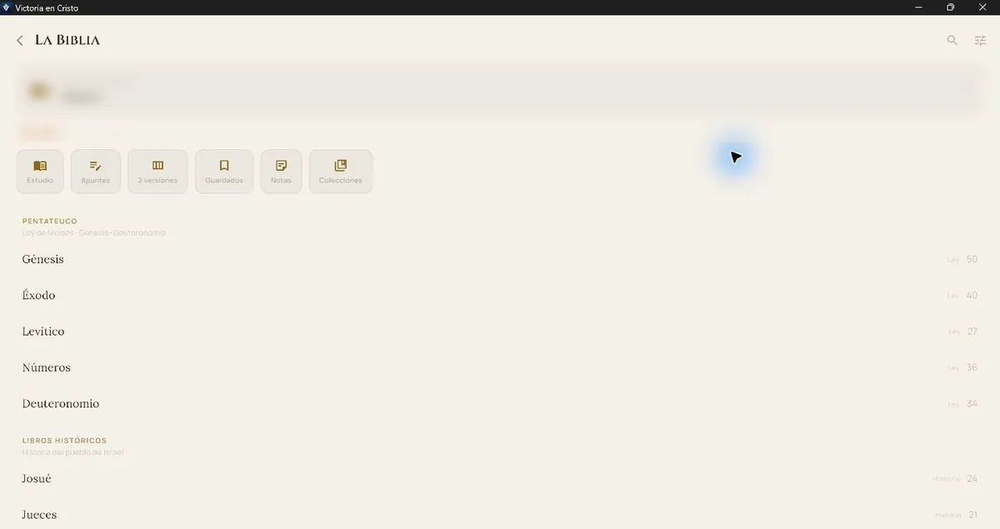
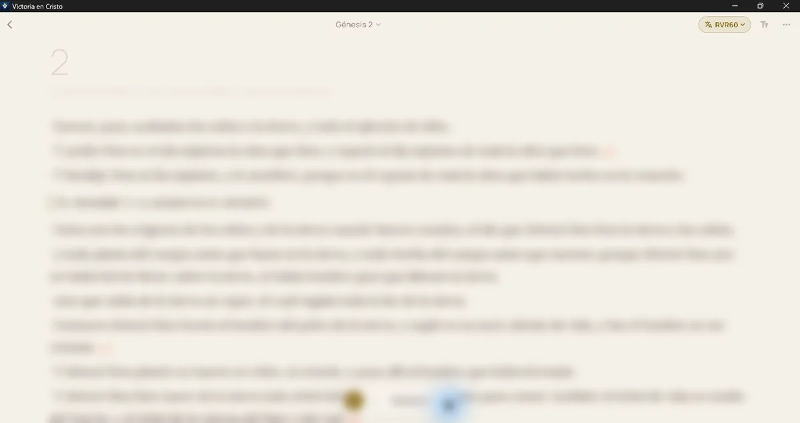
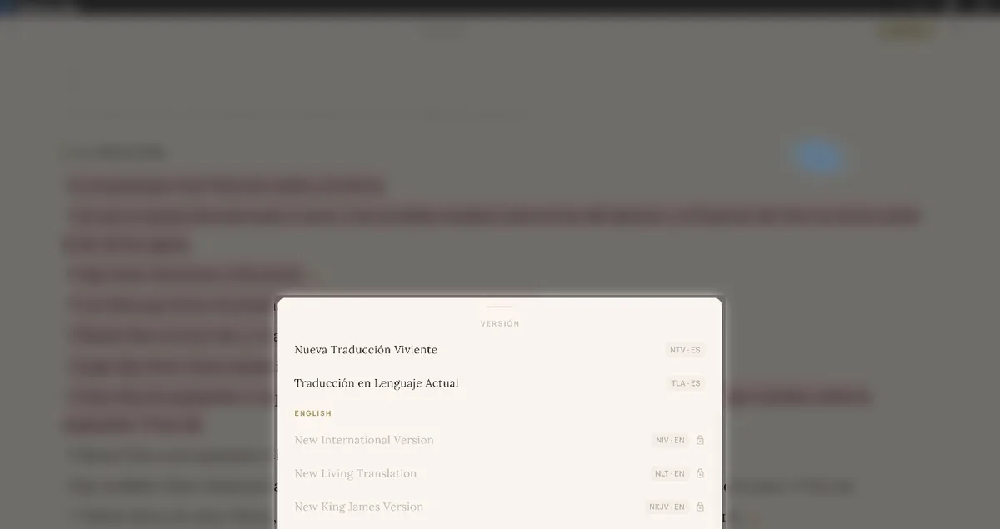
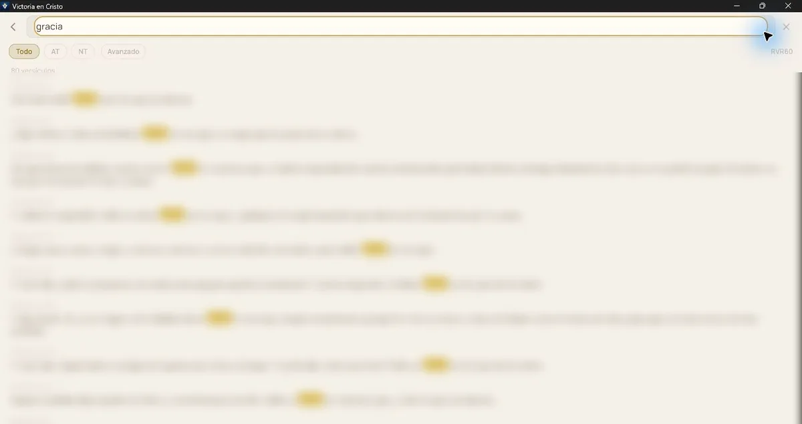
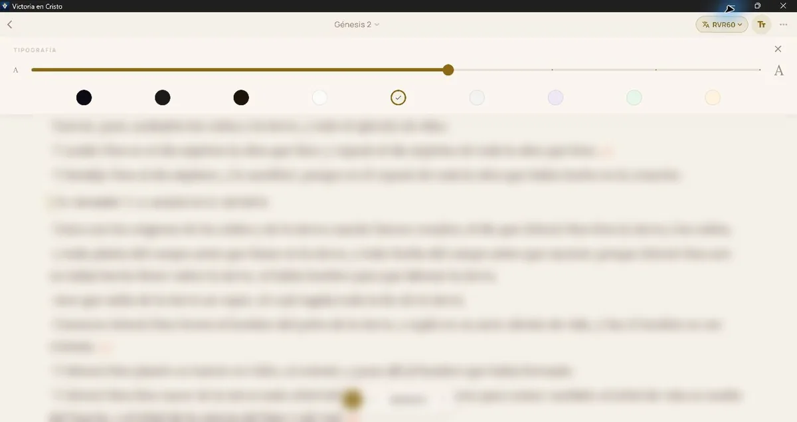
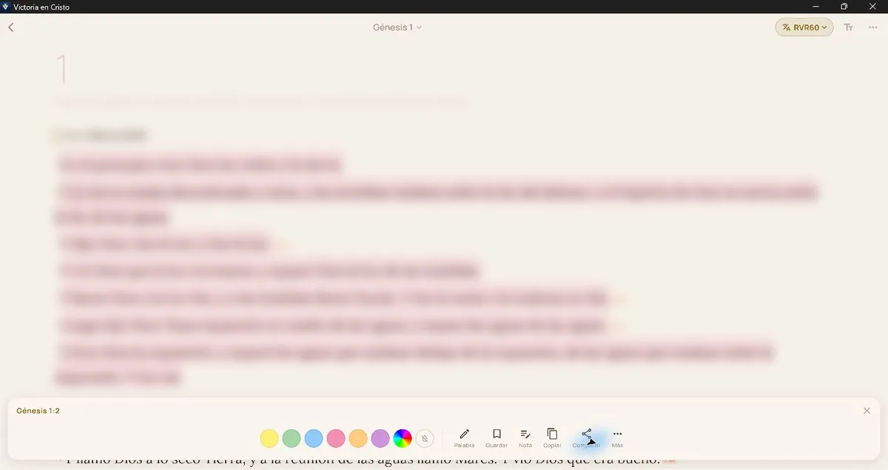
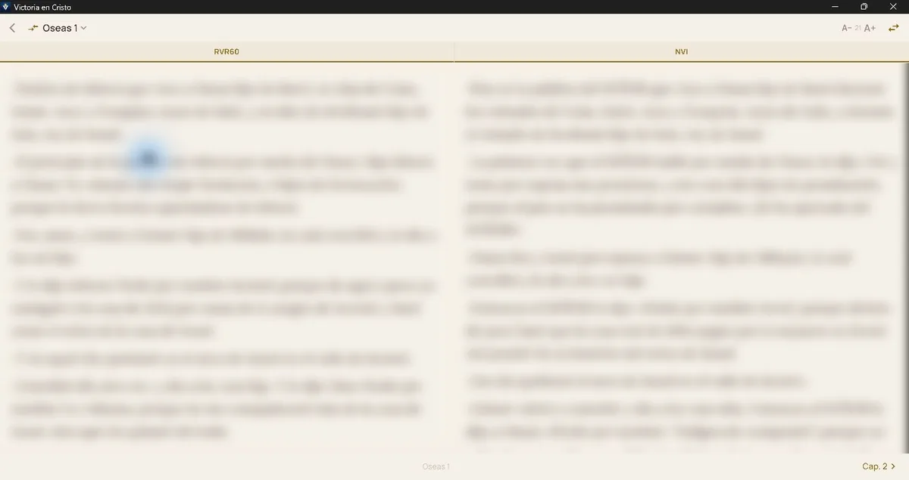
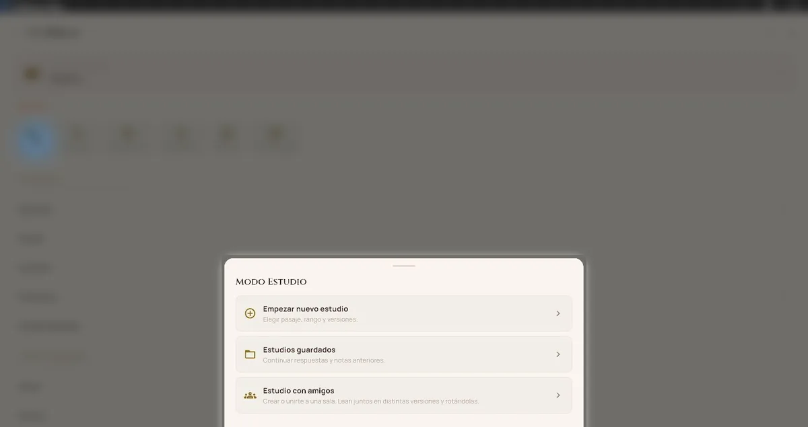
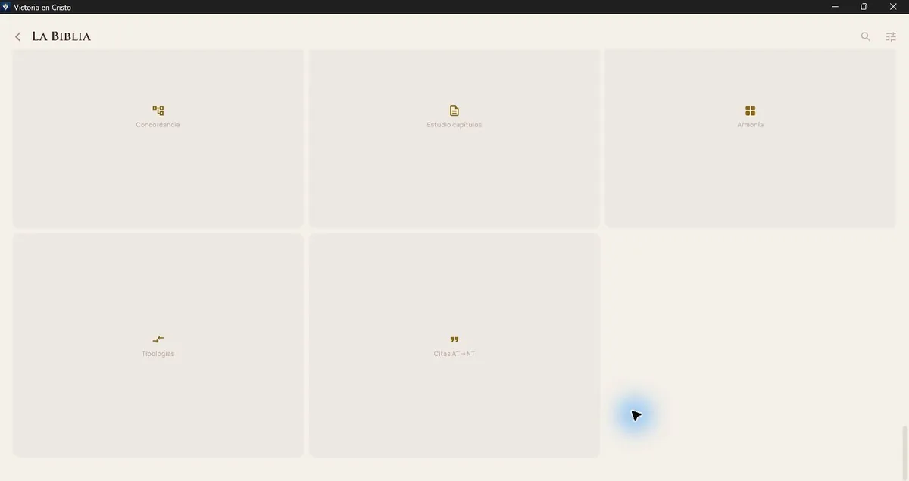

Centro de ayuda
Aprende cada herramienta paso a paso.
Busca una función o sigue un recorrido completo. Las capturas provienen de la aplicación real para Windows; difuminamos texto bíblico extenso y cualquier dato que pudiera pertenecer a una cuenta. En teléfono y iPad la distribución se adapta, pero los nombres y acciones se mantienen.
Tu búsqueda en esta página ocurre sólo en el navegador: no se guarda ni se envía.
No encontramos una guía con esas palabras. Prueba con un término más corto, como “Biblia”, “nota” o “cuenta”.
Primeros pasos
Ubícate, configura lo esencial y comienza sin prisa.
Conoce la pantalla de inicio
La portada reúne el versículo del día, las prácticas de hoy y tres espacios. No necesitas completar todo para comenzar.
- Desplázate hasta Explora.
- Abre Vida espiritual para oración, versículos, devocionales y progreso.
- Entra en Crecimiento espiritual para Biblia, Escuela del Reino y series.
- Usa Hermanos en Cristo para Compañero y Muro de Batalla.
- El botón coral ¡Necesito ayuda! permanece visible para acceder a recursos inmediatos.
Elige el espacio que responda a lo que necesitas hoy. La racha y las prácticas sirven como orientación, no como medida de tu valor espiritual.
Cuenta, acceso y perfil
- Abre la app y elige el método de acceso que aparezca disponible en tu dispositivo.
- Lee los Términos y el Aviso de Privacidad antes de crear o vincular una cuenta.
- Decide por separado si quieres sincronizar contenido que pueda revelar información religiosa, emocional o íntima.
- Abre Perfil desde la esquina superior del inicio para revisar la cuenta o solicitar su eliminación.
En Windows puede estar disponible el acceso sin cuenta mientras se configura Google. Las opciones exactas pueden variar entre Android, iPhone, iPad y Windows.
Nunca compartas contraseña, código de verificación ni enlace de restablecimiento con soporte. El correo de atención es gonzaleztalamantes836@gmail.com.
Configura la lectura y los recordatorios
- En el inicio, abre Ajustes desde la esquina superior derecha.
- Configura recordatorios únicamente para los horarios en que realmente quieras recibirlos.
- En la Biblia, usa el botón Tt del lector para cambiar tamaño y tema sin abandonar el capítulo.
- Abre los ajustes propios de la Biblia para elegir la versión preferida, palabras de Cristo en rojo y recursos disponibles.
- Si descargas contenido para usarlo sin conexión, hazlo desde un dispositivo y una red de confianza.
Después de cambiar una opción, vuelve al lector y comprueba el resultado. Los cambios de apariencia no modifican el texto bíblico.
Biblia completa
Desde abrir un capítulo hasta investigar palabras, comparar traducciones y organizar un estudio.
Abre la Biblia y comienza a leer
Este recorrido te lleva desde el inicio hasta un capítulo sin cambiar ninguna preferencia.

- En la portada, baja hasta Explora y abre Crecimiento espiritual.
- Selecciona La Biblia. En la parte superior verás Continuar leyendo y seis accesos rápidos.
- Busca el libro dentro de Pentateuco, Históricos, Poéticos, Profetas, Evangelios, Historia apostólica, Cartas o Profecía.
- Toca el libro y luego el número de capítulo. La sección Recientes facilita volver a capítulos visitados.
- Ya en el lector, toca el nombre del libro y capítulo en la parte superior para cambiar de pasaje. Usa las flechas inferiores para avanzar o retroceder un capítulo.

Resultado esperado: verás el capítulo, el selector de versión arriba, el botón de apariencia Tt y los controles de capítulo y audio abajo.
Elige idioma y versión bíblica

- Abre cualquier capítulo.
- Toca la abreviatura de versión en la esquina superior derecha, por ejemplo RVR60.
- Revisa los grupos Español y English. La marca de verificación identifica la versión activa.
- Selecciona únicamente una fila disponible. La app vuelve a cargar el mismo capítulo con esa traducción.
Qué significa el candado: la versión está identificada en la interfaz, pero su texto no se habilita hasta contar con una fuente y autorización válidas. Dar crédito o tener un archivo descargado no sustituye la licencia. NLT, NKJV y cualquier otra traducción protegida deben permanecer bloqueadas mientras falte esa autorización.
Busca una palabra, tema o referencia

- Desde la biblioteca toca la lupa, o abre Búsqueda dentro de Herramientas de estudio.
- Escribe al menos dos caracteres. Puedes usar una palabra, una frase, un libro o una referencia como Juan 3:16.
- Usa Todo, AT o NT para limitar las coincidencias.
- Toca un resultado para abrir su capítulo. Cuando la consulta es un libro o capítulo, la app muestra una tarjeta de acceso directo.
- Abre Avanzado para limitar un rango de libros o explorar por tema y personaje.
Si no encuentras el pasaje
- Prueba una palabra más corta y sin signos.
- Comprueba que estás buscando en la versión correcta.
- Cambia el filtro a Todo.
- Usa una referencia directa si conoces el libro y capítulo.
La pantalla muestra búsquedas recientes y permite borrarlas. Evita buscar nombres completos u otros datos personales innecesarios.
Ajusta la lectura y escucha el capítulo
Tamaño y tema

- Toca Tt en la esquina superior derecha.
- Mueve el control entre la A pequeña y la A grande.
- Elige una muestra de color y comprueba el contraste en el pasaje.
- Cierra el panel con la ×; el lector conserva tu selección.
Audio
- Toca los audífonos del encabezado o el botón circular de reproducción inferior.
- Si existe audio bíblico autorizado y hay conexión, la app intenta reproducir la voz humana del capítulo.
- Si no está disponible, usa la voz del dispositivo como alternativa.
- En modo de estudio con comentario disponible puedes elegir Sólo versículos, Versículos + comentario o Sólo comentario.
- Usa la barra del reproductor para pausar, reanudar o cerrar.
La calidad y los controles de voz pueden variar según el dispositivo, el idioma instalado y la disponibilidad del proveedor de audio.
Selecciona y trabaja con uno o varios versículos

- Toca un versículo para seleccionarlo. Toca otros versículos del mismo capítulo si quieres trabajar con varios.
- Elige un círculo para resaltar, o abre el selector multicolor para crear otro tono.
- Usa Palabra para pasar de seleccionar el versículo a seleccionar una palabra concreta.
- Usa Guardar, Nota, Copiar o Compartir según tu objetivo.
- Abre Más para Interlineal, Comentario, Conexiones, Guzik, Oración, Comparar o preparar contenido para el Muro, cuando el recurso esté disponible.
- Cierra con la × para volver al lector.
Cuando seleccionas varios versículos, algunas acciones usan el conjunto y otras toman el primero como referencia. Revisa la referencia de la barra antes de guardar o compartir.
Guarda, resalta y organiza tus notas
Guardados y resaltados
- Selecciona el versículo.
- Elige un color y, si quieres volver a él rápidamente, toca Guardar.
- Desde la biblioteca abre Guardados para localizarlo.
Notas de versículo y colecciones
- Selecciona un versículo y toca Nota.
- Escribe sólo lo necesario y guarda.
- Usa Notas para revisar todas tus notas y Colecciones para agrupar pasajes por tema.
Apuntes y notas de capítulo
Apuntes está pensado para notas amplias de enseñanza o predicación. Estudio capítulos reúne notas vinculadas a capítulos completos. Son herramientas distintas de una nota breve de versículo.
Las notas pueden revelar convicciones, salud emocional o situaciones de otras personas. Evita nombres completos, direcciones, teléfonos, contraseñas y detalles que no sean necesarios.
Compara dos versiones en vista paralela

- En la biblioteca abre 2 versiones, o dentro del lector abre el menú de tres puntos y elige Vista paralela.
- Toca la referencia superior para cambiar libro o capítulo.
- Toca el nombre de cada versión para elegir las dos traducciones disponibles.
- Usa A− y A+ para ajustar el tamaño.
- Usa el botón de flechas para intercambiar el lado de las versiones.
- Selecciona un versículo de la fila para resaltar, copiar ambas traducciones o compartir.
Resultado esperado: dos columnas del mismo capítulo. Si una traducción está bloqueada o no descargada, elige otra disponible.
Usa el Modo Estudio personal o con amigos

Estudio personal
- En la biblioteca toca Estudio y elige Empezar nuevo estudio.
- Selecciona el pasaje, el rango de versículos y las versiones disponibles.
- Lee el pasaje y responde las preguntas de observación, interpretación y aplicación.
- Guarda para continuar después. La app avisa si quedan cambios sin guardar.
- Al terminar puedes preparar un resultado en PDF para compartir.
Estudio con amigos
- Elige Estudio con amigos.
- Crea una sala o introduce el código que te comparta una persona de confianza.
- Comprueba el pasaje y la versión asignada antes de escribir.
- Sincroniza sólo las respuestas que quieras aportar a la sala.
- Sal de la sala cuando ya no quieras recibir cambios o rotación de versiones.
Un código de sala permite entrar al estudio correspondiente. Compártelo sólo con las personas invitadas y no incluyas información íntima de terceros en tus respuestas.
Profundiza en una palabra y su contexto
- Selecciona un versículo y abre Más.
- Elige Interlineal para revisar palabras originales y datos morfológicos cuando estén disponibles.
- Usa Comentario o Guzik para consultar el recurso atribuido correspondiente.
- Abre Conexiones para referencias cruzadas, armonías, tipologías y relaciones del pasaje.
- Usa Palabra en la barra de selección para elegir un término; desde las opciones de Biblia también puedes abrir el Diccionario Bíblico.
- Regresa al capítulo para verificar siempre la interpretación dentro de su contexto.
Una ayuda de estudio acompaña el texto; no lo sustituye. Algunos recursos dependen del libro, el idioma, una atribución específica o conexión a internet.
Recorre las herramientas avanzadas

- Búsqueda
- Localiza palabras, frases, libros y referencias.
- Línea de Tiempo
- Relaciona acontecimientos, personajes y periodos.
- Mapas Bíblicos
- Ubica lugares y abre mapas relacionados cuando existan.
- Concordancia
- Busca una palabra y revisa sus apariciones en la versión activa.
- Estudio capítulos
- Reúne notas vinculadas a capítulos completos.
- Armonía
- Ordena acontecimientos paralelos de los Evangelios.
- Tipologías
- Presenta relaciones temáticas que deben leerse en contexto.
- Citas AT→NT
- Conecta citas del Nuevo Testamento con su pasaje de origen.
Abre una herramienta, usa su buscador o filtros y toca el resultado para profundizar. Vuelve con la flecha superior; el lector conserva el punto principal de lectura.
Consulta introducciones y contexto del capítulo
- Dentro del lector abre el menú de tres puntos.
- Elige Introducción al libro.
- Revisa autor, contexto, estructura y mapas sólo cuando aparezcan como disponibles.
- Al final de algunos capítulos encontrarás herramientas relacionadas, nota de capítulo o comentario.
- Usa la flecha superior para volver al mismo pasaje.
Si una introducción o mapa indica que no está disponible, continúa con el texto y prueba otro libro. No todos los recursos cubren todos los capítulos.
Comparte un versículo con intención
- Selecciona el versículo y toca Compartir, o abre Más → Texto.
- Elige texto o una plantilla de imagen disponible.
- Revisa la referencia, la versión y la cantidad de texto antes de continuar.
- Selecciona el destino en la hoja de compartir del dispositivo.
Comparte fragmentos breves dentro de los límites permitidos por la traducción. Antes de publicar en el Muro o fuera de la app, elimina notas, nombres o detalles privados propios o de otra persona.
Vida espiritual
Oración, devocionales y memoria de lo que estás viviendo.
Organiza tus peticiones en el Mapa de Oración
- En la portada baja hasta Explora y abre Vida espiritual.
- Entra en Mapa de Oración y revisa las peticiones existentes antes de crear otra.
- Toca la acción para añadir una petición y escribe sólo la intención necesaria.
- Elige las opciones de organización o recordatorio que realmente quieras usar.
- Guarda y vuelve a la petición cuando quieras orar, editarla o marcar una respuesta.
Resultado esperado: la petición aparecerá en tu mapa y podrás retomarla sin publicarla en la comunidad.
Una petición privada no necesita nombres completos, diagnósticos, domicilios ni detalles identificables de otras personas.
Devocionales, versículos y progreso
Realiza una práctica breve
- Abre Vida espiritual.
- Elige versículo del día, devocional o una práctica pendiente.
- Lee el contenido completo y abre la referencia bíblica cuando quieras revisar su contexto.
- Responde o marca la práctica sólo después de completarla.
- Regresa al inicio para comprobar que el estado se actualizó.
Interpreta tu progreso
Mi Progreso reúne actividad y constancia para ayudarte a recordar hábitos. Una racha interrumpida no borra lo aprendido ni mide la fe o el valor espiritual de una persona.
Si una reflexión despierta angustia o una situación de riesgo, pausa la actividad y busca acompañamiento humano apropiado.
Crecimiento
Formación bíblica disponible dentro de la app.
Empieza una lección en Escuela del Reino
- Abre Crecimiento espiritual desde la portada.
- Entra en Escuela del Reino y revisa el recorrido antes de comenzar.
- Selecciona una lección disponible; las lecciones bloqueadas requieren completar la anterior.
- Avanza por cada apartado sin cerrar la pantalla mientras escribes una respuesta.
- Usa la reflexión final para conectar lo aprendido con una acción concreta y guarda el avance.
- Vuelve al índice para confirmar qué lección quedó completada y cuál sigue.
Lee los pasajes citados en su capítulo completo. El material formativo acompaña la Biblia y no sustituye su contexto.
Explora las series disponibles
- Entra en Crecimiento espiritual → Series.
- Elige un tema y revisa cuántas partes contiene.
- Abre una parte disponible y completa lectura, video o reflexión según se muestre.
- Si aparece contenido de YouTube, decide si quieres habilitar el reproductor externo.
- Vuelve al índice para continuar con la siguiente parte.
Si permites un video, YouTube puede recibir la IP y datos técnicos necesarios para reproducirlo. Puedes retirar esta opción en Configuración → Privacidad y datos.
Comunidad
Acompañamiento con límites, privacidad y herramientas de seguridad.
Conecta con un Compañero de Batalla
- Entra en Hermanos en Cristo → Compañero de Batalla.
- Lee qué información puede compartirse antes de crear el vínculo.
- Genera un código si vas a invitar, o introduce el código recibido si vas a aceptar.
- Confirma por otro medio que el código pertenece a la persona correcta.
- Comparte únicamente los avances o mensajes necesarios para el acompañamiento.
- Usa los controles del vínculo para dejar de compartir cuando cambies de decisión.
Resultado esperado: ambas personas verán el vínculo confirmado; un código por sí solo no debe interpretarse como identidad verificada.
El acompañamiento es voluntario. No compartas contraseñas, códigos de acceso, documentos, direcciones, datos financieros ni información de terceras personas.
Participa con seguridad en el Muro de Batalla
El Muro utiliza identidad seudónima, pero no promete anonimato absoluto.
Antes de publicar
- Reduce el mensaje a lo que realmente necesitas expresar.
- Elimina nombres, ubicaciones, escuelas, lugares de trabajo, teléfonos, diagnósticos y detalles de terceras personas.
- Revisa que el texto no contenga amenazas, acoso, contenido sexual explícito, instrucciones peligrosas o material ajeno sin permiso.
- Publica sólo si aceptas que otras personas de la comunidad puedan leerlo y responder.
Si encuentras contenido inadecuado
- Usa Reportar desde la publicación e indica el motivo real.
- Usa Bloquear para dejar de ver o recibir interacción de esa cuenta.
- No confrontes a una persona si hacerlo aumenta el riesgo.
- Si existe peligro inmediato, contacta servicios de emergencia y a una persona de confianza.
Ayuda inmediata y Escudo en Android
Ayuda inmediata
- Toca ¡Necesito ayuda! desde el inicio.
- Elige una acción breve de respiración, oración o enfoque.
- Aléjate de la situación o dispositivo cuando eso sea seguro.
- Contacta a una persona de confianza si necesitas acompañamiento real.
Escudo de Pureza en Android
- Abre la herramienta y lee qué filtra antes de activarla.
- Acepta la conexión VPN local que Android muestra únicamente si reconoces a Victoria en Cristo.
- Comprueba el indicador de activación.
- Desactívalo desde la app o desde la conexión VPN de Android cuando ya no quieras usarlo.
El Escudo aplica un filtro DNS mientras está activo; no puede garantizar que todo el contenido se bloquee y puede impedir el acceso a sitios legítimos.
Estas herramientas no diagnostican, tratan ni sustituyen atención médica, psicológica, pastoral profesional o servicios de emergencia. Ante peligro inmediato, usa los servicios de emergencia de tu localidad.
Privacidad y datos
Controles para entender, reducir y eliminar información.
Revisa tus opciones de privacidad
- Abre Configuración → Privacidad y documentos legales.
- Revisa por separado métricas de uso, reportes de fallos y reproductor de YouTube.
- Activa sólo las opciones que comprendas y quieras permitir.
- Vuelve a esta pantalla para retirarlas en cualquier momento.
- Abre desde ahí el Aviso de Privacidad, Términos, Cookies, Reembolsos, Eliminación y Avisos de terceros.
Negarte o retirar las opciones voluntarias no debe impedir las funciones principales. El consentimiento necesario para cuenta y sincronización se revoca eliminando la cuenta.
Elimina tu cuenta y tus datos
- Inicia sesión en la cuenta que quieres eliminar.
- Abre Perfil y selecciona Eliminar cuenta.
- Lee qué datos se eliminan y qué registros técnicos pueden permanecer temporalmente.
- Confirma tu identidad si el proveedor lo solicita.
- Confirma únicamente cuando estés seguro; la operación puede no ser reversible.
Si no puedes entrar, escribe a gonzaleztalamantes836@gmail.com con el asunto “Eliminación de cuenta”. No envíes tu contraseña ni códigos de acceso. Consulta la guía de eliminación y sus límites.
Qué registra este sitio web
Este sitio no usa cookies, analítica, píxeles, formularios ni almacenamiento local. La búsqueda de esta página y la elección de un camino en la portada ocurren sólo en la página abierta y desaparecen al cerrarla o recargarla.